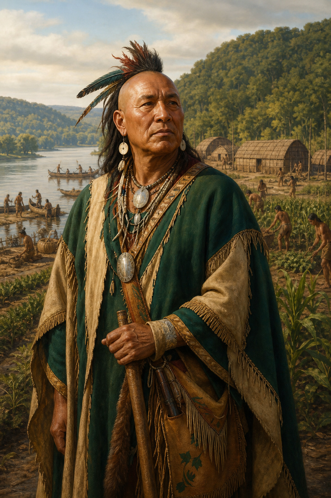
The Valley Itself
Communities governed, used, and defended the valley through residence, kinship, and local authority.
HIST 101 · Chapter 4 · Lecture 2
The Ohio Country was a lived-in political world.
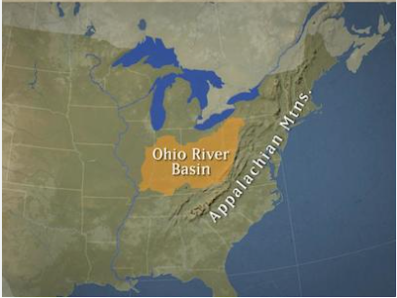
The label described communities with dispersed authority — not French settlements
How it worked
By the 1740s
Kinship, trade, and local autonomy gave the republic towns leverage — but not absolute control.
What it made possible
What it could not stop alone
The Middle Ground: Reciprocity or Manipulation?
1. Open the activity from the HIST 101 Historian's Workshop.
2. Sort all eight scenarios into their strongest categories.
3. Check your sort, read the feedback, and revise.
4. Answer the final question, download your record, and submit it.
Time: 5 minutes
HIST 101 → Historian's Workshop → The Middle Ground
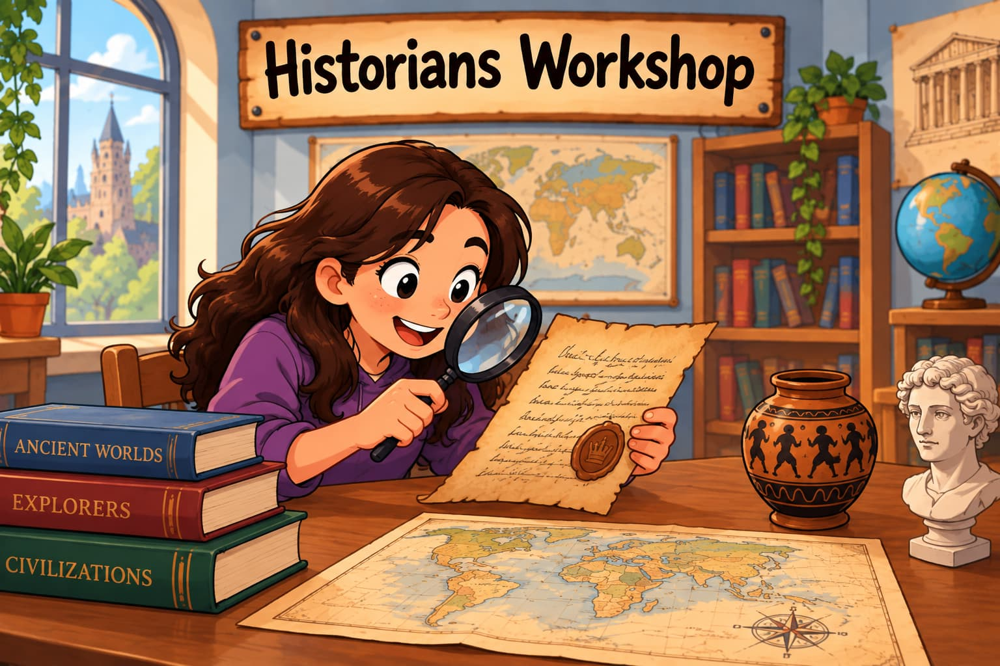

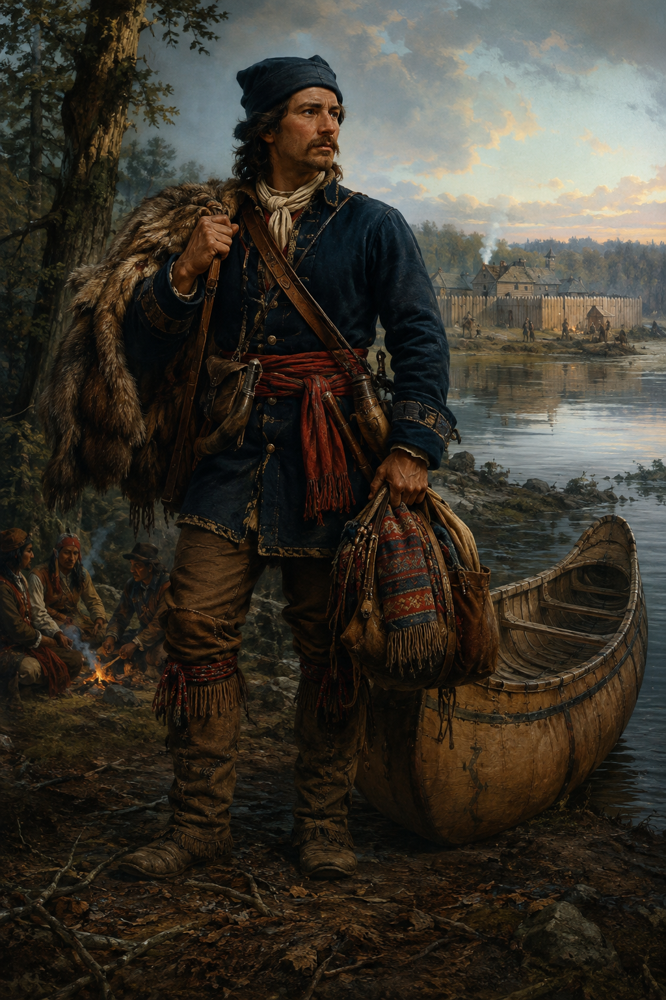
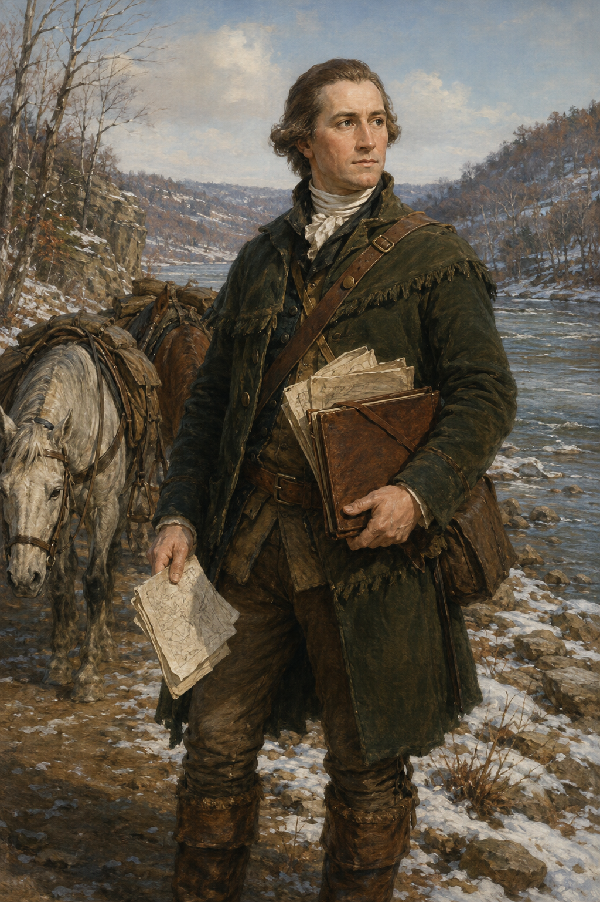
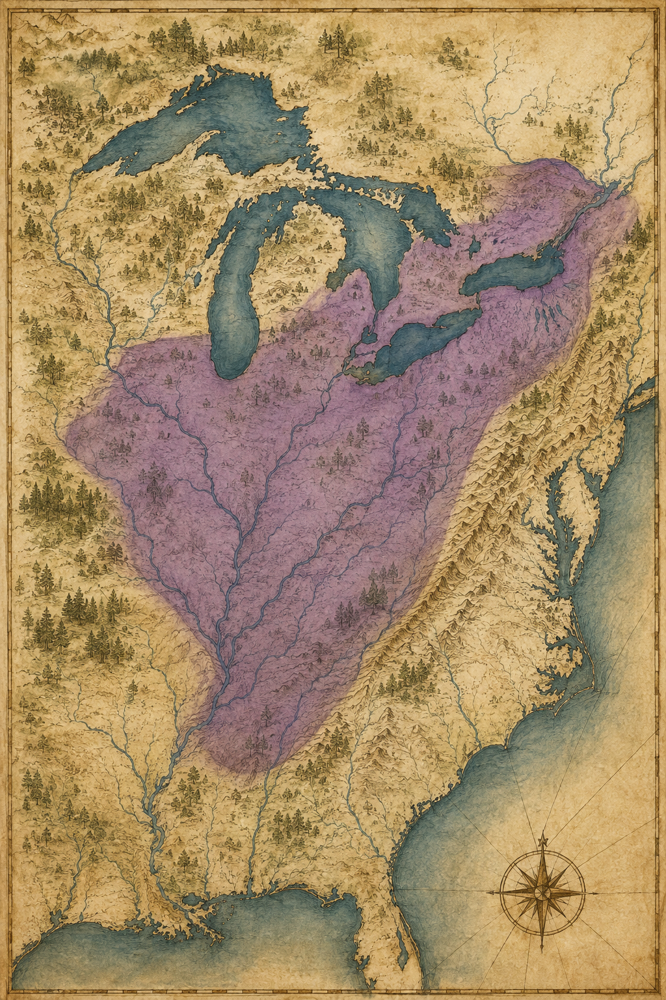
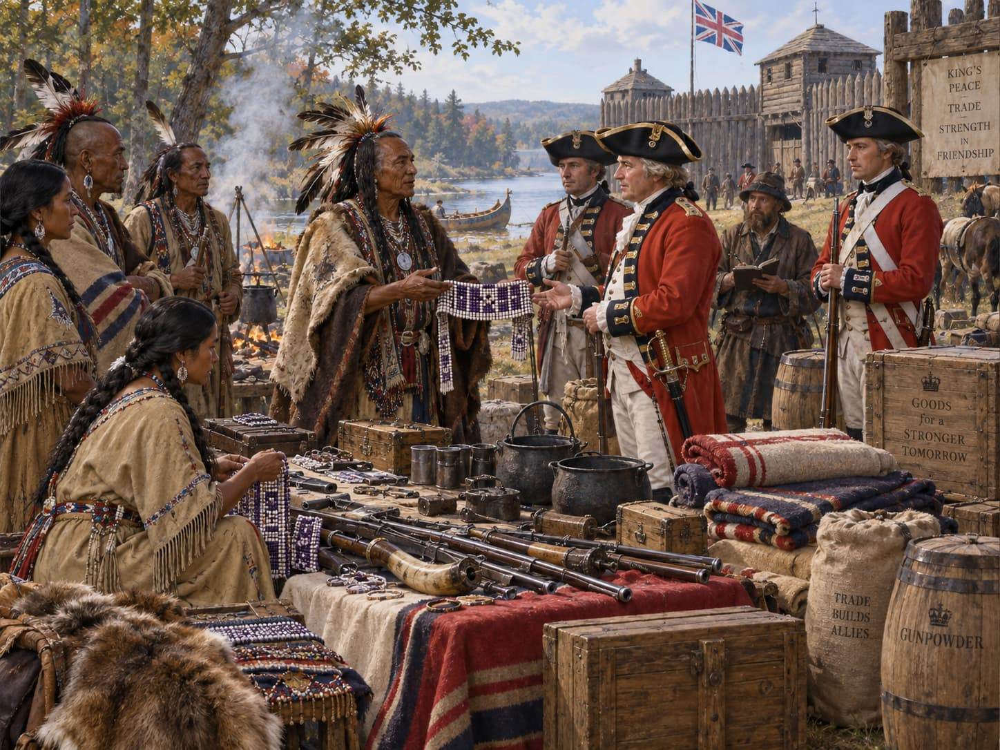
Generated reconstruction of alliance diplomacy
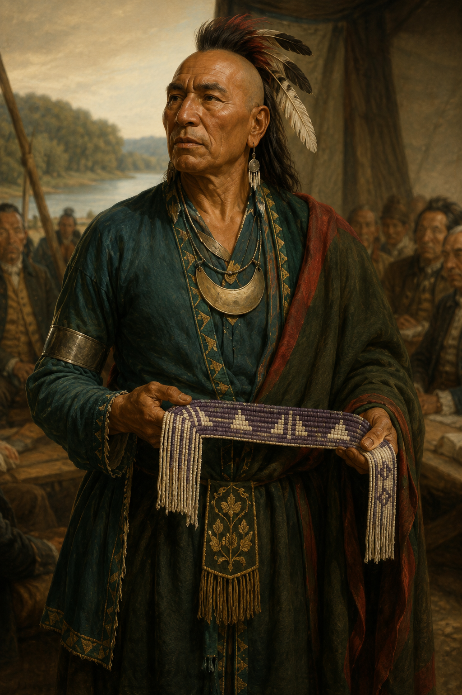
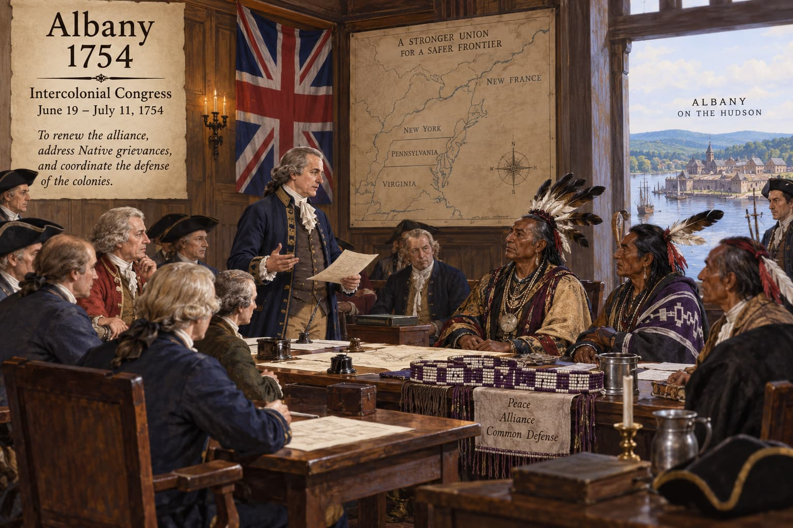
Generated reconstruction of the Albany Congress

Who Said No to Albany—and Why?
1. Open the activity from the HIST 101 Historian's Workshop.
2. Match all four actors to the concern each sought to protect.
3. Check your matches, read the feedback, and revise.
4. Complete the select-all question, download your record, and submit it.
Time: 5 minutes
HIST 101 → Historian's Workshop → Who Said No to Albany?
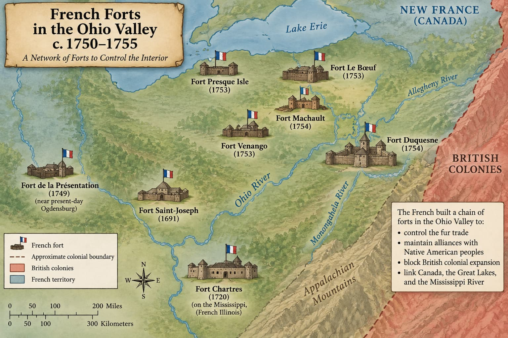
Generated schematic—not a precise reference map
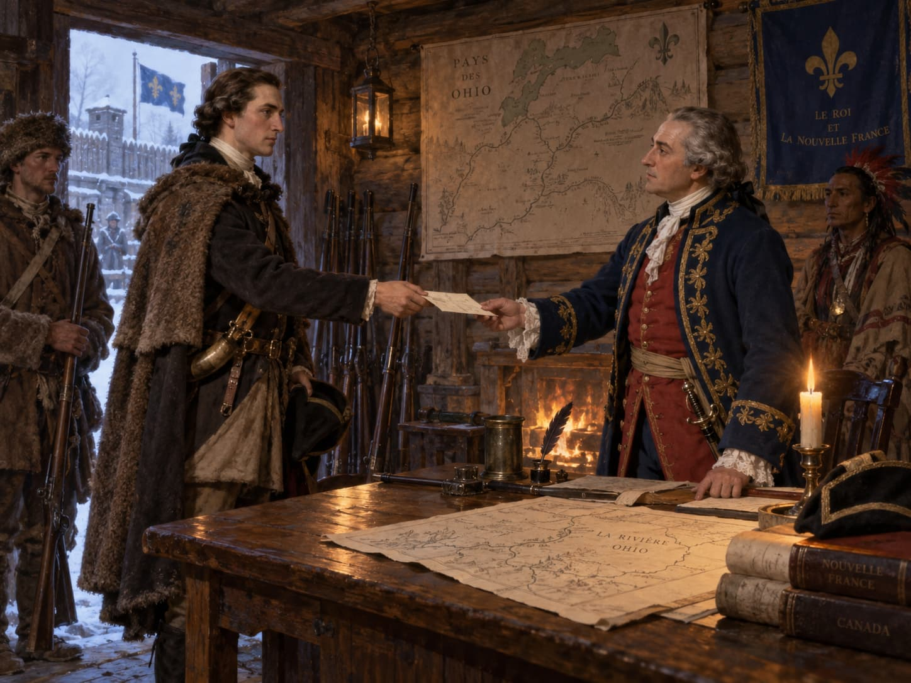
Generated reconstruction of the 1753 mission
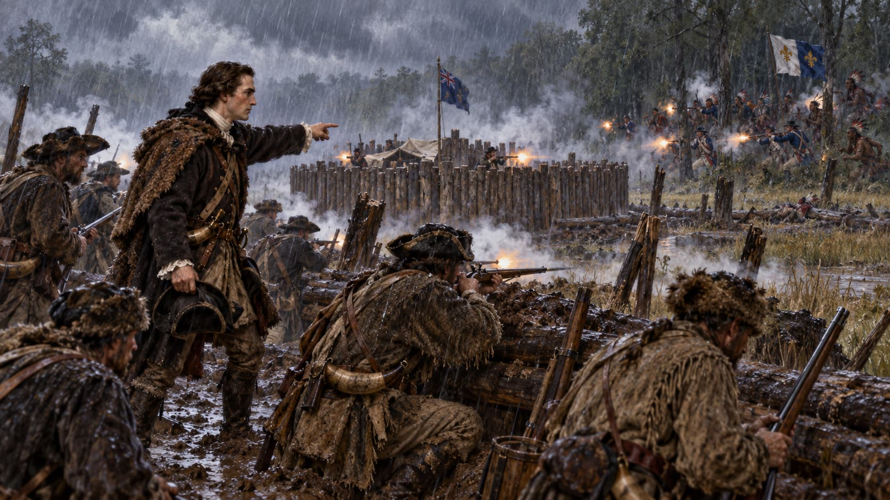
Generated reconstruction; fort and troop positions are interpretive
For the online hour.
Native North America was not a side waiting to choose between two empires.
Britain
Pressed charter claims, trade, settlement, and land-company expansion.
France
Sought an imperial corridor linking Canada and Louisiana through forts and alliances.
Native political world
Held territory, trade networks, military power, and diplomatic systems of its own.
The claim
The problem
Washington's objective
Tanacharison's objective
The republics sought land, trade, kinship obligations, and diplomatic recognition on their own political terms.
It commissioned Christopher Gist in 1750 to explore, describe, and help survey its western claims. Gist's two journeys produced important geographic intelligence and journals. George Washington's connection was family: his half-brothers Lawrence and Augustine were company investors, and Lawrence later became an important officer. Washington himself went west in 1753 as the governor's emissary, not the company's hired surveyor.
Textbooks compress. This is what checking looks like.
→ / Space: Next | ←: Previous | S: Study Buddy notes | F: Fullscreen | O: Overview | ESC: Close popup
Iroquois people — primarily Seneca and Cayuga — who relocated westward into the Ohio Country during the 18th century, settling outside the direct authority of the Haudenosaunee Confederacy's core territory in New York.
Their move gave them independence from Confederacy oversight, but also meant British colonial officials sometimes questioned whether Confederacy leaders could speak for them.
Read more:
Mingo (Wikipedia)
The diplomatic metaphor through which the Haudenosaunee Confederacy and the British colonies managed their relationship from the 17th century onward — a bond that required continuous renewal through ceremony, gift exchange, and grievance resolution.
Left untended, the Chain "tarnished." Tarnished enough, it broke — which is exactly what Hendrik declared to New York in 1753.
Read more:
Covenant Chain (Wikipedia)
The eighteenth-century region organized around the Ohio River and its tributaries, including parts of present-day Ohio, western Pennsylvania, West Virginia, Kentucky, and Indiana.
It was a populated and contested political world, not an empty frontier awaiting European settlement.
The name used by the Six Nations Confederacy for itself. In this lecture, the term includes the Mohawk, Oneida, Onondaga, Cayuga, Seneca, and Tuscarora nations.
Some Haudenosaunee communities and migrants lived in or claimed authority over parts of the Ohio Country, but they did not always speak with one voice.
A claim to superior authority over another people while allowing that people some internal independence.
Haudenosaunee diplomats sometimes asserted this kind of authority over Ohio Valley peoples. Those communities did not necessarily accept the claim, which made land cessions and diplomacy contested.